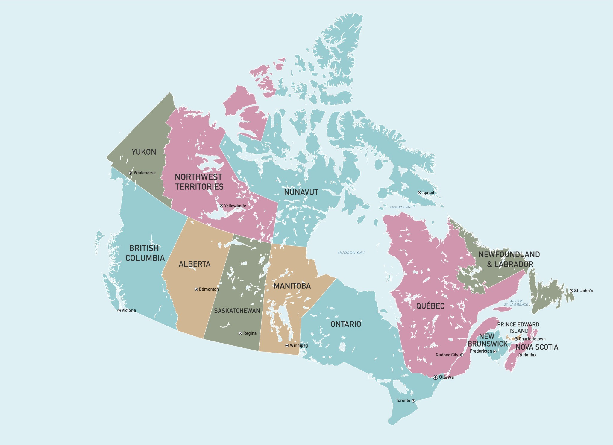

✳ POSTMARKS FROM CANADA
Every place leaves a little sound behind.
Choose a point on the map to receive a postcard.

Play the 85-second sound journey ↗
ⓘ
×
Ⅱ
10 SECOND SOUNDSCAPE
0:00 / 0:10
FLIP ↻
COLLECT ✳
✳
POSTMARKED
×
Image & sound credits
×
A journey across Canada
Ⅱ PAUSE
0:00 / 1:25